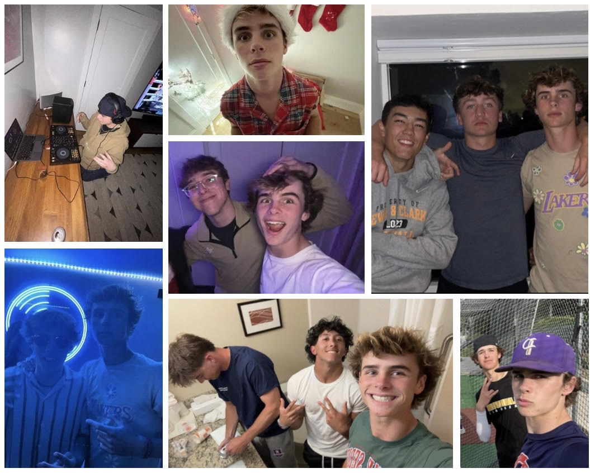
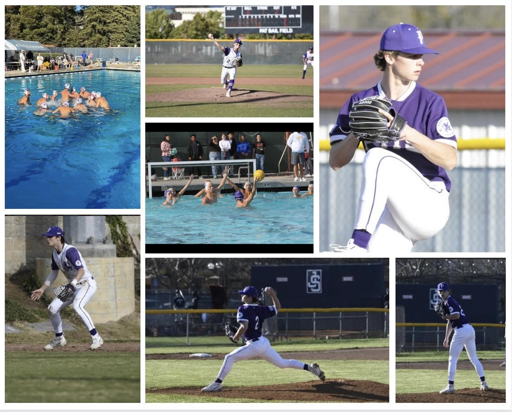

During the 2022-23 school year I played two sports. I played water polo and baseball. In the fall water polo was my main focus, practice everyday from 7-9. Water polo was fun but baseball is my main sport. During the spring I played baseball with my really good friends Michael "Waddle" Aikawa, Hoodie Kos, and Willy P. Also during my free time on the weekends I hang out with my friends, Rosh, OMAX, MurDaMan, and Tobias Harris.

These are my super duper cool buddies.

This is me playing sports.